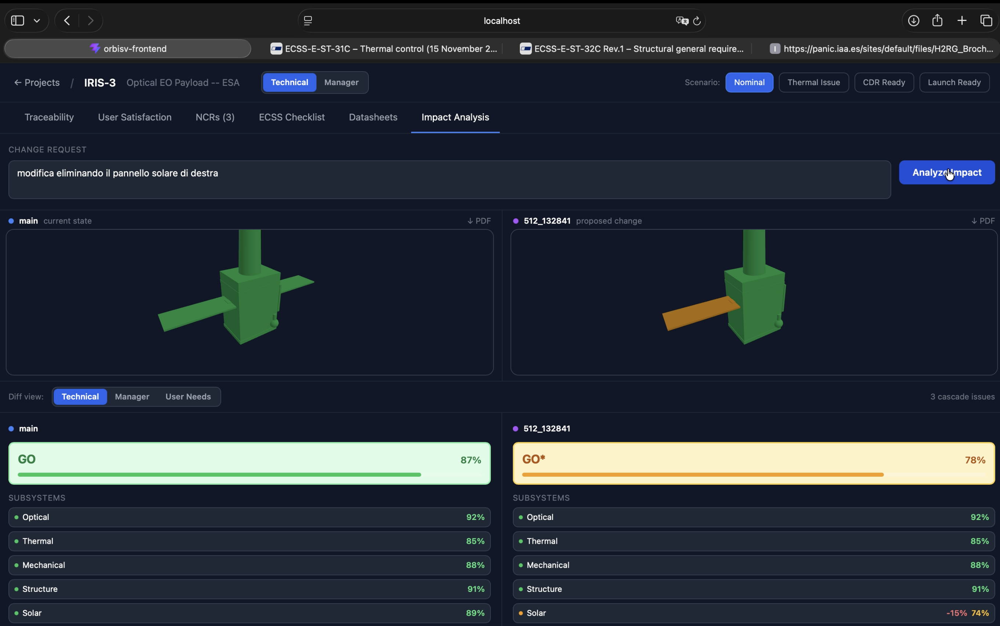

2026 · space systems · proof of concept
OrbisV
A decision-oriented verification and validation platform for optical Earth observation payloads. Connects user needs, requirements and engineering evidence to GO/NO-GO readiness decisions, with 3D visualization and LLM-assisted change-impact analysis.
ReactThree.jsFastAPIOllama
repo ↗